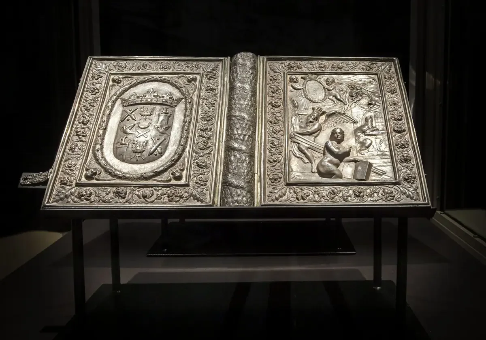
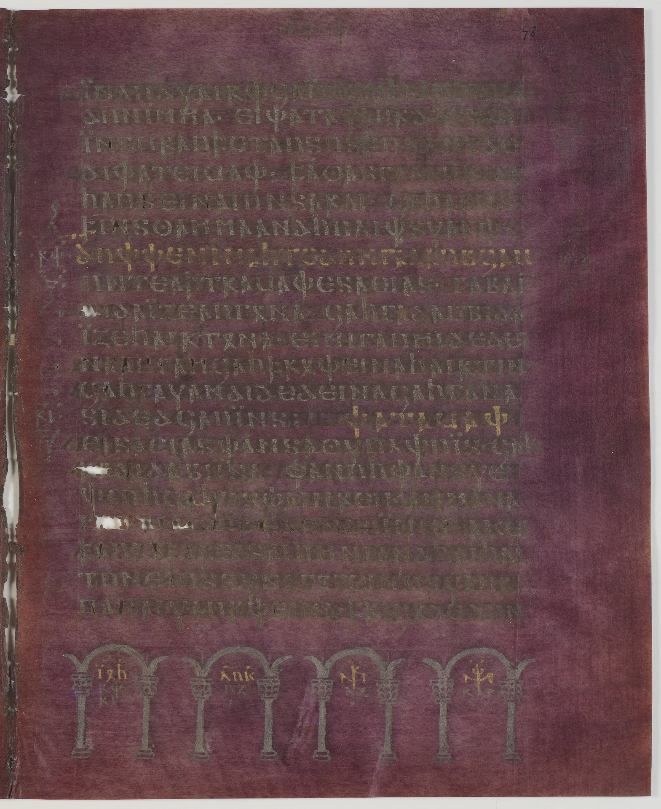
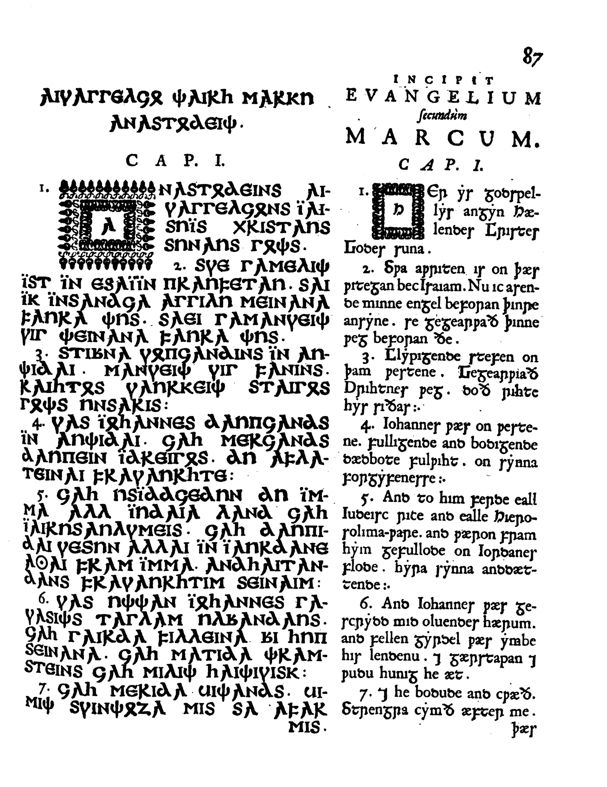
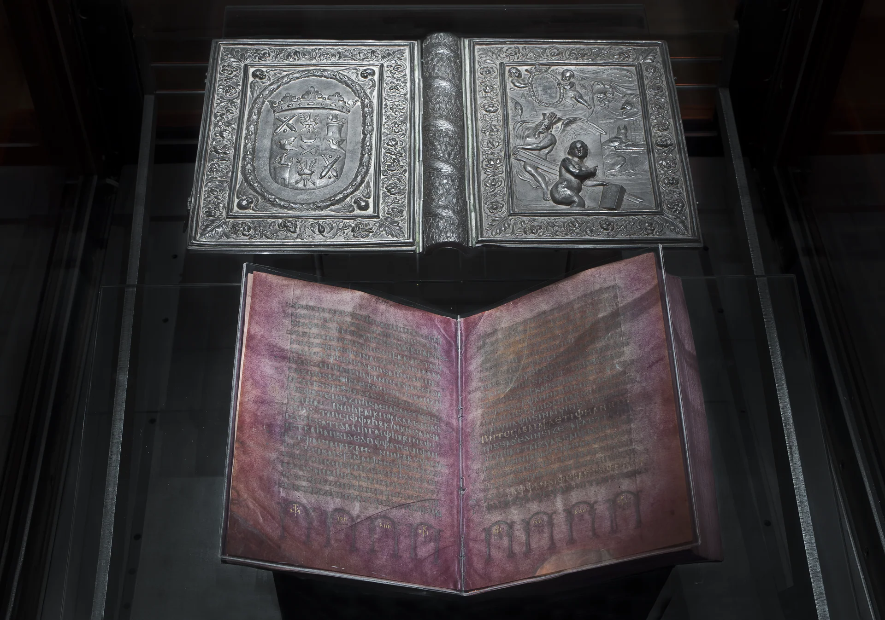
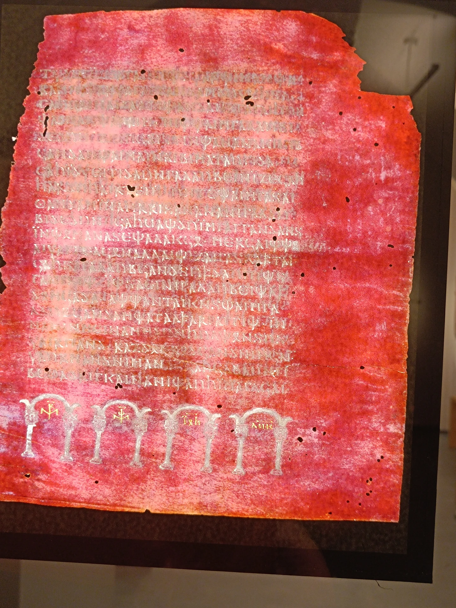
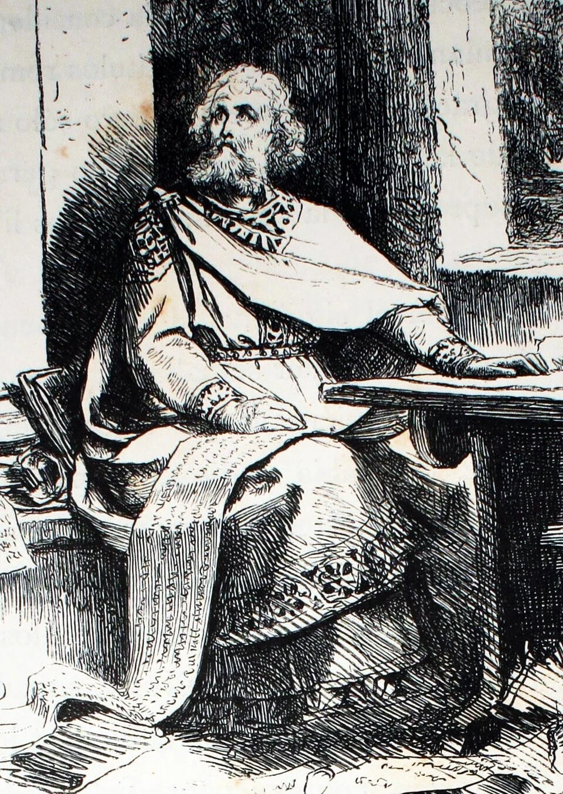

아직 펼치지 않은 카드가장 오래된 성경을 찾아서 · 5은 성경4세기의 한 주교는 성경을 옮기려고 글자까지 만들었어요. 200년 뒤 그 번역은 어떤 책으로 베껴졌을까요?보라색 종이에 은색 글씨로 쓴 성경이 있대!
6세기 · 1662년 · 1970년라벤나 → 프라하 → 암스테르담 → 웁살라 · 슈파이어
은 성경
보랏빛 양피지에 은으로 쓴 고트어 복음서. 1662년 이 책을 실은 배가 폭풍을 만났어요. 암스테르담의 외교관이 책을 어떻게 싸서 스웨덴으로 보냈는지, 기록에 남은 차례대로 한 단계씩 따라가 보세요.
보라색 종이에 은으로 쓴 성경이 있대. 이 책을 실은 배가 폭풍을 만났어! 책은 어떻게 됐을까?
검수 전 시안이에요(기준서 1판). 1662년의 차례와 날짜는 웁살라 대학 도서관 사서 라르스 뭉크함마르의 글을 따랐어요. 단계 그림은 이 안내서가 그렸고, 배와 상자의 모양은 빗대어 그린 거예요. 상상은 ‘눈 감고 상상해 보기’에만 썼어요.
시안 확인용카드 단계 미리 보기
1
보랏빛 양피지의 은 글씨
스웨덴 웁살라 대학 도서관에 있는 은 성경의 한 쪽이에요. 요한복음 12장 37~43절이 고트어로 적혀 있어요. 양피지는 보랏빛으로 물들였고, 두께는 0.11~0.12밀리미터로 아주 얇아요.
글씨는 대부분 은으로 썼어요. 오랜 세월에 빛이 바래 지금은 어둡게 보여요. 가운데쯤에는 금으로 쓴 줄도 있어요.

쪽 맨 아래 네 개의 아치는 네 복음서에 하나씩 있는 표예요. 웁살라 대학 도서관은 이것을 네 복음서의 같은 이야기를 서로 찾아보게 하는 표라고 설명해요.
보라색 종이에 은으로 쓴 성경이야. 처음엔 반짝반짝했겠지?
물어보기보라색 종이에 은 글씨, 누구를 위해 만들었을까?
2
천 년을 떠돈 책
은 성경은 6세기 초 이탈리아에서, 아마도 동고트 왕 테오도리쿠스를 위해 만들어졌어요. 그 뒤 천 년 동안의 길은 거의 알려져 있지 않아요.
16세기에 독일 베르덴의 베네딕도회 수도원에서 다시 나타났고, 1600년 무렵에는 프라하의 황제 루돌프 2세가 가졌어요. 1648년 스웨덴 군대가 프라하를 칠 때 전리품으로 스톡홀름에 왔어요.

스웨덴 크리스티나 여왕의 도서관에 있던 책은, 여왕이 자리에서 물러난 뒤 사서 이삭 포시우스가 네덜란드로 가져갔어요. 사진은 1665년 네덜란드 도르드레흐트에서 유니우스가 고트어 복음서를 앵글로색슨어 복음서와 나란히 찍어 펴낸 책이에요.
이 성경은 이탈리아, 독일, 체코 프라하, 스웨덴, 네덜란드를 떠돌았대.
물어보기책이 말을 할 수 있다면 어떤 여행 이야기를 해 줄까?
3
1662년, 폭풍을 건넌 상자
1662년 스웨덴의 재상 마그누스 가브리엘 데 라 가르디가 네덜란드에서 이 책을 사들였어요. 암스테르담에 있던 스웨덴 외교관 페테르 트로치히가 책을 스웨덴으로 보내는 일을 맡았어요.
웁살라 대학 도서관의 사서 라르스 뭉크함마르는 그 뒤의 일을 날짜까지 전해요. 아래 단추를 눌러 한 단계씩 따라가 보세요. 그림은 이 안내서가 기록을 바탕으로 그렸어요.
단추를 누를 때마다 1662년의 한 단계씩 나아가요. 왼쪽은 책을 지키는 상자, 오른쪽은 바다예요.
이 안내서가 그린 1662년의 뱃길 · 차례와 날짜는 뭉크함마르(웁살라 대학 도서관)의 글을 바탕으로, 배와 상자의 모양은 빗대어 그림
책을 지키는 겹
- 참나무 상자
- 납 상자
- 땜납으로 봉함
참나무와 납, 두 겹으로 싸인 은 성경은 스웨덴에 닿았어요. 7년 뒤인 1669년, 데 라 가르디는 은 표지를 씌워 웁살라 대학에 기증했어요.
배가 폭풍을 만났대! 그래도 책은 무사했을까?
물어보기소중한 책을 배로 보낸다면 어떻게 싸서 보낼래?
4
1669년의 은 표지
1669년 데 라 가르디는 이 책에 은 표지를 씌워 웁살라 대학에 기증했어요. 표지는 화가 다비드 클뢰커 에렌스트랄이 그림을 그리고, 스톡홀름의 궁정 금세공인 한스 셀링이 만들었어요.
1995년 4월에는 전시하던 낱장과 은 표지를 도둑맞았어요. 한 달쯤 뒤 스톡홀름 중앙역의 짐 보관함에서 되찾았고, 전시실은 더 안전하게 새로 지었어요.

반짝이는 은 표지를 씌워서 대학에 선물했대.
물어보기도둑맞았던 책을 다시 찾았을 때 사람들 마음은 어땠을까?
5
1970년, 벽 속의 마지막 장
1970년 10월 독일 슈파이어 대성당의 성 아프라 경당을 고치던 중, 1859년에 벽 속에 넣어 둔 유물 상자가 나왔어요. 그 안에 은 성경의 마지막 장이 들어 있었어요.
마가복음 16장 12~20절, 마가복음의 마지막 부분이에요. 이 한 장은 지금 슈파이어의 팔츠 역사 박물관에 있어요.

어떻게 이 한 장만 떨어져 나와 슈파이어 대성당 벽 속까지 갔는지는 아직 알려지지 않았어요.
성당 벽 속에서 은 성경의 마지막 장이 나왔대!
물어보기마지막 한 장은 어떻게 혼자 거기까지 갔을까?
눈 감고 상상해 보기
1662년 암스테르담의 부두, 바닷바람에 짠 냄새가 실려 와요. 폭풍을 겪고 돌아온 참나무 상자를 조심스럽게 열어요. 보랏빛 책이 그대로 누워 있어요. 납판을 두르고, 뜨거운 땜납이 틈을 따라 흘러 굳어요. 이번에는 꼭 닿기를.
눈을 감아 봐. 부두야. 바닷바람이 짭짤해. 상자를 열었더니 보라색 책이 무사해! 이번엔 단단한 상자에 꼭꼭 넣어서 보내자.
나의 자리
이제는 아무도 쓰지 않는 말로 남은 이야기처럼, 내가 잊고 싶지 않은 말은 무엇인가요?
우리만 아는 비밀 글자를 만든다면 어떤 모양일까?
마음에 닿는 한 줄을 고르거나 직접 써 보세요. 한 줄을 남기면 이 자리의 도장이 찍혀요. 이 기기에만 저장돼요.
더 깊이
궁금한 칸만 펼쳐 읽어도 괜찮아요.
알고 보면
‘은 책’이라는 이름 1597년 불카니우스가 고트어 본문을 처음 책에 실으며 이 사본을 ‘은 책(Codex argenteus)’이라고 불렀어요.
한 장의 크기 가로 20센티미터, 세로 24센티미터쯤이에요. 처음에는 적어도 336장이었고, 웁살라에 187장, 슈파이어에 1장이 남았어요.
DG 1 웁살라 대학 도서관에서 이 책의 번호는 ‘데 라 가르디 모음 1번’이에요. 기증한 사람의 이름을 딴 번호예요.
네 아치 쪽마다 아래에 그린 아치 네 개 안에는 네 복음서 저자를 나타내는 글자가 적혀 있어요. 첫 장면의 쪽에서는 금빛으로 보여요.
기록마다 다른 점
어디서 만들었을까 웁살라 대학 도서관은 라벤나에서 베껴 썼을 것으로 보지만, 포강 유역이나 브레시아였다는 의견도 있어요.
마지막 장은 어떻게 갔을까 슈파이어의 상자 속 유물은 진짜가 아니라고 해요. 그 상자에 이 한 장이 언제, 왜 들어갔는지는 알려지지 않았어요.
그림 속 울필라스

4세기의 고트족 주교 울필라스가 성경을 옮기는 모습을 1879년 독일 화가 빌헬름 린덴슈미트가 상상해 그린 판화예요. 은 성경은 그 번역의 네 복음서를 6세기에 베껴 쓴 책이에요.
함께 읽는 말씀
말씀은 뜻만 옮기고, 본문은 대한성서공회 개역개정으로 이어 드려요.
요한복음 12장 37~43절 첫 장면 사진 속 쪽의 구절이에요. 많은 표적을 보고도 믿지 않은 사람들 이야기에 이사야의 말이 이어져요.
마가복음 16장 12~20절 슈파이어에서 찾은 마지막 장의 구절이에요. 부활하신 예수께서 제자들을 온 세상으로 보내시며 마가복음이 끝나요.
직접 가 보기 · 집에서 읽기
확인한 날 · 2026년 11월 18일 · 바뀌기 쉬운 정보라 정기적으로 다시 확인해요
웁살라 대학 도서관 카롤리나 레디비바의 전시실에서 볼 수 있어요. 여는 때는 가시기 전에 꼭 확인해 주세요. 슈파이어의 마지막 장은 팔츠 역사 박물관에 있어요(늘 전시하는지는 확인해 주세요).
집에서는 고트어 성경 본문을 낱말 풀이와 함께 읽을 수 있어요.
피닉스호까지 금박
일곱 단계를 끝까지 따라가 책을 피닉스호에 실어 보내면 카드에 금박이 입혀져요.
1662년의 일곱 단계를 끝까지 해 보기
아이와 함께 채색
아이와 함께 ‘영화처럼 보기’를 끝까지 보면 카드가 채색돼요.
아이와 함께 ‘영화처럼 보기’를 끝까지 보기
근거 보기 (8)
- 라르스 뭉크함마르(웁살라 대학 도서관), IFLA 1998 발표 — 라벤나, 베르덴, 프라하, 1648년 전리품, 크리스티나·포시우스, 1662년 트로치히가 참나무 상자에 넣어 7월 28일 성 요리스호, 폭풍에 자위더르해에서 바닥에 걸림, 상자 무사·하나님께 감사, 납 상자·땜납, 9월 12일 피닉스호로 성공, 1669년 기증, 1970년 슈파이어, 1995년 도난
- 웁살라 대학 도서관: The history of Codex argenteus — 라벤나(테오도리쿠스를 위해서일 수도), 베르덴, 루돌프 2세, 1648년 전리품, 크리스티나·포시우스, 데 라 가르디, 1669년 은 표지(에렌스트랄), 336장·187장·슈파이어, 1995년 도난
- 웁살라 대학 도서관 소식(2011): 세계기록유산 — 네 아치는 복음서마다 하나씩, 복음서끼리 찾아보는 표
- 유네스코 세계기록유산 신청서(웁살라 대학 도서관, 2010) — 양피지 0.11~0.12mm, 가로 19.75~20cm·세로 24.25~24.5cm, DG 1, 은 표지는 궁정 금세공인 한스 셀링이 에렌스트랄의 도안으로, 슈파이어 장은 팔츠 역사 박물관, 1995년 도난 뒤 한 달
- Wikipedia: Codex Argenteus — 길잡이(1970년 10월 성 아프라 경당 공사, 1859년 벽 속에 넣은 가짜 유물 상자, 마가복음 16:12~20, 1597년 불카니우스의 ‘Codex argenteus’, 라벤나·포강 유역·브레시아, 1995년 4월 5일 도난·한 달 뒤 스톡홀름 중앙역 짐 보관함)
- 위키미디어 공용 파일 정보 — 요한복음 12:37~43 쪽(웁살라 대학 도서관), 유니우스 1665년 도르드레흐트판 87쪽(마가복음 1:1~7), 린덴슈미트 「성경을 옮기는 울필라스」(1879)
- 프로젝트 울필라(안트베르펜 대학) — 스트라이트베르크판 고트어 성경 전자판
- Wikipedia: Zuiderzee — 길잡이(네덜란드 북서쪽 북해의 얕은 만, 평균 깊이 4~5m, 1932년 둑으로 막혀 에이설호가 됨)
그림·사진·소리 출처
‘처음 만나는 기독교 문화’의 깊은 카드예요. 실제 인물의 사진은 쓰지 않았어요. 카드 단계와 남긴 글은 이 기기에만 저장돼요.